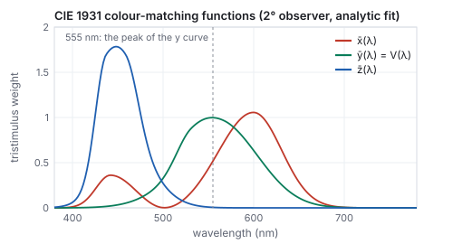
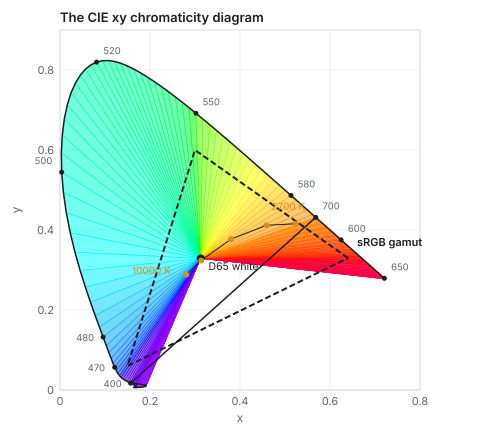
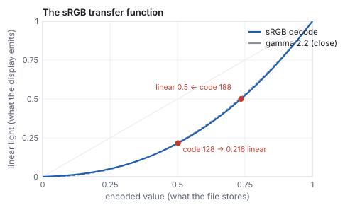
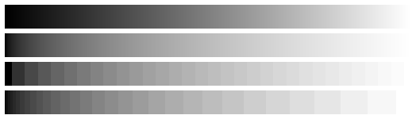
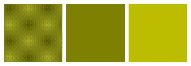
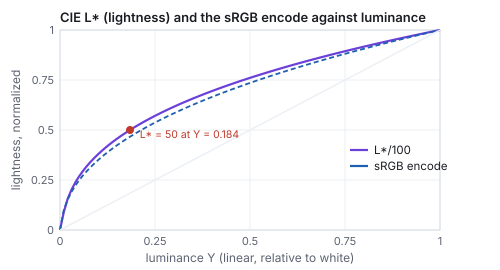
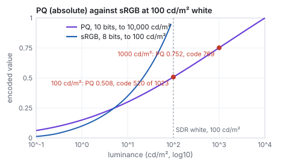
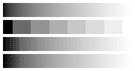

This chapter links to the course’s interactive demos and uses MathJax for its
formulas. Read it through the course website (or download the file and open it in a
browser); a Canvas inline preview will reach neither the demos nor the math.
All chapters.
Color, Radiometry, and Displays
CSS 551 · Advanced 3D Computer Graphics · course text
Course text · what the three numbers in a pixel measure: light as a spectrum and as a quantity, the CIE observer that reduces a spectrum to three, chromaticity and gamuts, the sRGB space with its matrix and transfer function worked, why blending and lighting must happen in linear light, the perceptual spaces, white balance, colour deficiency, wider gamuts, HDR encodings, dithering, video colour, and what a display can and cannot show. Not tied to a lecture; read it after the illumination chapter.
Every earlier chapter ends in a triple \((r, g, b)\) and treats it as three brightnesses. This chapter is about what those numbers are. Light is a spectrum, a power per wavelength; the eye reduces any spectrum to three responses, and the CIE observer of 1931 makes that reduction a measurable integral, evaluated here on blackbody spectra. The three responses define a space in which every color is a point, every device a region, and sRGB the region a standard monitor shows, whose matrix and curve the chapter works on one color. The curve is the part that bites: an 8-bit code is not proportional to light, so averaging codes, blending textures, or lighting in code space gives wrong answers, worked on a red-green blend that comes out either dark olive or bright yellow depending on the space. The second half goes where a renderer’s output meets people and devices: the perceptual space CIELAB and the difference metric \(\Delta E\), the HSV picker, white balance by chromatic adaptation, what the course’s figure palette looks like to a colour-deficient viewer, the wider gamuts of current displays, the PQ curve that encodes absolute luminance for HDR, dithering, the Y′CbCr encoding of video, and the display itself: how much light it makes against the world and how many steps it can show.
Definition (spectrum, radiometric quantities)
Light arriving at a point is a spectral power distribution \(P(\lambda)\), power per unit
wavelength over the visible range of about 380 to 780 nm. Radiometry measures it in physical units:
radiant flux (watts), irradiance (watts per square meter arriving on a surface),
and radiance (watts per square meter per steradian, the quantity a camera or eye actually
measures along a ray, and the \(L\) of the
rendering equation). Radiometric quantities are integrals of \(P(\lambda)\) over wavelength with
no regard to whether the eye can see it.
Photometry weights the same integrals by the eye’s sensitivity, the luminous
efficiency \(V(\lambda)\), which peaks at 555 nm (green) and falls to nothing at the ends of the
visible range. One watt at 555 nm is defined as 683 lumens; a watt at 650 nm is worth 683 \(V(650)\),
about 75 lumens; a watt of infrared is worth none. The photometric partners of flux, irradiance and
radiance are luminous flux (lumens), illuminance (lux) and luminance (candelas per square meter,
the unit of a display’s brightness). A rendering engine works in radiometric units and converts
to luminance only for tone mapping and display; the \(Y\) of Section 2 is exactly luminance up to that
constant.
Worked example (the efficacy of a light bulb)
An incandescent filament at 2700 K radiates a blackbody spectrum, most of it in the infrared.
Weighting Planck’s law by \(V(\lambda)\) and integrating, the chapter’s generator finds
12 lumens per watt of radiated power; a 6500 K blackbody, the color of daylight, gives 96, because a
larger share of its power falls under the \(V\) curve. A real 100 W bulb emits about 1,600 lumens, in
agreement once the bulb’s losses are counted; an LED reaches over 150 lumens per watt by emitting
only where \(V\) is large.
2 · The CIE observer: a spectrum becomes three numbers
The retina has three cone types with broad, overlapping sensitivities, so any spectrum produces
just three cone signals and two spectra that produce the same three are indistinguishable
(metamers). Color science does not need the cone curves themselves; it needs any three
curves that span the same space. In 1931 the CIE standardized three such curves from color-matching
experiments, the colour-matching functions \(\bar x(\lambda), \bar y(\lambda), \bar z(\lambda)\),
chosen so that \(\bar y = V\) and so that all three are non-negative.
Definition (tristimulus values)
\[
X = \int P(\lambda)\,\bar x(\lambda)\,d\lambda, \qquad Y = \int P(\lambda)\,\bar y(\lambda)\,d\lambda, \qquad Z = \int P(\lambda)\,\bar z(\lambda)\,d\lambda.
\]
\(Y\) is luminance. Two spectra with equal \((X, Y, Z)\) look identical to the standard observer.

The colour-matching functions, from the analytic fit of Wyman, Sloan and Shirley (2013), which the chapter’s generator integrates. \(\bar y\) is the luminous efficiency of Section 1.
Worked example (the color of a blackbody)
Integrating Planck’s spectrum at 2700 K against the three curves and normalizing gives the
chromaticity \((x, y) = (0.459, 0.412)\), the orange-white of a tungsten bulb; at 6500 K,
\((0.314, 0.324)\), within 0.005 of the D65 daylight white \((0.3127, 0.3290)\) that sRGB adopts
(D65 is a measured daylight spectrum, not a blackbody, hence the small gap); at 10000 K,
\((0.281, 0.288)\), the blue-white of a clear sky. The chain spectrum \(\to\) three integrals
\(\to\) chromaticity is the whole of colorimetry.
3 · Chromaticity and gamuts
Definition (chromaticity)
\(x = X/(X + Y + Z)\), \(y = Y/(X + Y + Z)\): the tristimulus direction with luminance divided out.
A color is \((x, y, Y)\), chromaticity plus luminance. The chromaticities of pure wavelengths trace
the spectral locus; the straight segment closing it from 400 to 700 nm is the line of
purples, colors with no single wavelength. Every visible color lies inside.

The 1931 diagram. The fill is a reminder, not a measurement: no display can show the colors near the rim, and the fill is sRGB clipped. The sRGB triangle covers 43 % of the area inside the locus.
Mixing two lights gives a color on the segment between their chromaticities, so a device with
three primaries can show exactly the triangle they span: its gamut. sRGB’s primaries
are the phosphors of a 1990s monitor, red \((0.64, 0.33)\), green \((0.30, 0.60)\), blue
\((0.15, 0.06)\); the triangle leaves out the saturated greens and cyans in particular. Wider
gamuts (DCI-P3, used by phones and cinema; Rec. 2020 for ultra-high-definition television) push the
primaries outward; Rec. 2020’s sit on the locus itself. A file in a wide gamut shown on an sRGB
display without conversion is wrong in every saturated color, which is what color management
exists to prevent. The diagram’s geometry is not perceptual: equal distances are not equal
color differences (greens are stretched, blues compressed), a defect the CIE’s later Lab and Luv
spaces address.
4 · sRGB: the matrix
A working color space is three primaries and a white. Given those, the linear \((R, G, B)\) of the
space and \((X, Y, Z)\) are related by a \(3\times3\) matrix; for sRGB with its D65 white,
\[
\begin{pmatrix} X \\ Y \\ Z \end{pmatrix} = \begin{pmatrix} 0.4124 & 0.3576 & 0.1805 \\ 0.2126 & 0.7152 & 0.0722 \\ 0.0193 & 0.1192 & 0.9505 \end{pmatrix} \begin{pmatrix} R \\ G \\ B \end{pmatrix},
\]
with the rows of \(Y\) the luminance weights: green carries 72 % of luminance, blue 7 %. The
columns are the \(XYZ\) of the three primaries at full strength, and they sum to D65’s \(XYZ\)
with \(Y = 1\). The inverse matrix maps any \(XYZ\) to sRGB; a result with a negative component or
one above 1 is outside the gamut.
Worked example (one color through the matrix)
The sRGB color \((0.5, 0.2, 0.8)\), stored as codes \((128, 51, 204)\), a violet. Section 5’s
decode gives linear \((0.2140, 0.0331, 0.6038)\). Then
\(X = 0.4124(0.2140) + 0.3576(0.0331) + 0.1805(0.6038) = 0.2091\),
\(Y = 0.2126(0.2140) + 0.7152(0.0331) + 0.0722(0.6038) = 0.1128\),
\(Z = 0.0193(0.2140) + 0.1192(0.0331) + 0.9505(0.6038) = 0.5820\);
chromaticity \((0.231, 0.125)\), near the blue corner; luminance \(0.113\), an eighth of white,
though the code values average \(0.5\). Pushing \(XYZ\) back through the inverse matrix returns
\((0.2141, 0.0331, 0.6038)\).
5 · sRGB: the transfer function and 8 bits
The number in a file is not the linear \(R\) of Section 4. It is an encoded value, and the encoding
exists for one reason: the eye’s sensitivity to a step in light is roughly proportional to the
light already present, so equal steps in linear light are wasted in the highlights and too coarse
in the shadows. Spending the 256 codes of a byte evenly in a compressed scale spends them where the
eye can use them. Historically the compression was the cathode-ray tube’s own response,
near a power 2.2; sRGB standardized a curve close to it.
Definition (the sRGB transfer function)
Encoded \(c\) from linear \(v\), both in \([0, 1]\):
\[
c = \begin{cases} 12.92\,v & v \le 0.0031308 \\ 1.055\,v^{1/2.4} - 0.055 & \text{otherwise,} \end{cases}
\qquad
v = \begin{cases} c / 12.92 & c \le 0.04045 \\ \bigl((c + 0.055)/1.055\bigr)^{2.4} & \text{otherwise.} \end{cases}
\]
The linear toe near black avoids the infinite slope of a pure power. Over most of the range the
curve is within a percent of \(v = c^{2.2}\), which is why “gamma 2.2” is the usual shorthand.

The decode direction. Half the code range is a fifth of the light; half the light is at code 188.
Worked example (what a byte can show)
Code 128, the middle of the byte, decodes to \(((0.502 + 0.055)/1.055)^{2.4} = 0.216\) of full light;
linear 0.5 encodes to \(1.055\,(0.5)^{1/2.4} - 0.055 = 0.735\), code 188. The step from code 0 to
code 1 is \(3.0\times10^{-4}\) in linear light; from 127 to 128, \(3.6\times10^{-3}\); from 254 to
255, \(8.9\times10^{-3}\). A byte spent linearly instead would step by \(3.9\times10^{-3}\) everywhere:
thirteen times coarser at black, where the eye is most sensitive, and finer than needed at white.
Below 1 % of full light, sRGB has 25 distinct codes and linear 8-bit has 3.

Top to bottom: codes spaced evenly; linear light spaced evenly; 32 levels quantized in linear light; 32 levels quantized in sRGB. The third strip is what an 8-bit linear framebuffer looks like in the shadows, and why framebuffers are not linear.
6 · Work in linear light
Everything physical about light is linear: two lights add, a surface reflects a fraction, a lens
blurs by averaging. None of those operations is correct on encoded values, because the encoding is
not linear. The rule of a correct pipeline is therefore: decode textures to linear on input, do all
arithmetic (lighting, blending, filtering, mipmapping, antialiasing) in linear light, and encode once
on output, after the tone mapping of the illumination chapter.
GPUs do the decode and encode in hardware when a texture or framebuffer is declared sRGB.

Pure red and pure green blended half and half. Left: a fine checker of the two, which the eye averages. Middle: the average of the codes, \((128, 128, 0)\). Right: the average in linear light, encoded, \((188, 188, 0)\). Step back from the page and the checker matches the right square.
Worked example (the blend, in numbers)
Red \((1, 0, 0)\) and green \((0, 1, 0)\) are the same in either space. Averaging codes gives
\((0.5, 0.5, 0)\), which decodes to linear \((0.214, 0.214, 0)\), luminance
\(0.2126(0.214) + 0.7152(0.214) = 0.199\). Averaging in linear light gives \((0.5, 0.5, 0)\) linear,
luminance \(0.464\), encoded \((0.735, 0.735, 0)\). The checker’s true average luminance is
\((0.2126 + 0.7152)/2 = 0.464\): the linear blend is right and the code blend is less than half as
bright. The same error, in the same direction, afflicts a Gouraud gradient interpolated in code
space, a mipmap averaged in code space (distant textures go dark), an antialiased edge blended in code
space (thin bright lines look thinner than they are), and a lighting sum computed on an undecoded
texture. All were common in games before about 2008.
Transparency is one more linear operation. The over operator blends a source of opacity
\(\alpha\) onto a destination as \(\alpha\,\mathbf{s} + (1 - \alpha)\,\mathbf{d}\), in linear light: red at
\(\alpha = 0.5\) over white is \((1, 0.5, 0.5)\), a pink of luminance 0.606, encoded \((255, 188, 188)\);
done on codes it decodes to \((1, 0.214, 0.214)\), a much darker pink. The other alpha decision is
premultiplication. A straight-alpha texel stores \((r, g, b, \alpha)\) with the colour at full
strength; a premultiplied texel stores \((\alpha r, \alpha g, \alpha b, \alpha)\). Filtering (the bilinear
and mipmap averages of the texture chapter) is
only correct on premultiplied data: averaging an opaque red texel \((1, 0, 0, 1)\) with a transparent
black one \((0, 0, 0, 0)\) in straight form gives \((0.5, 0, 0, 0.5)\), a half-transparent dark
red, and every sprite gets a dark fringe; in premultiplied form the same average is
\((0.5, 0, 0, 0.5)\), which is half-transparent pure red once divided by its alpha. Compositing
premultiplied sources is also simpler, \(\mathbf{s} + (1 - \alpha)\mathbf{d}\), and associative, which
is what lets layers be flattened in any order.
Pitfall (the wrong space, three ways)
Each of these produces an image that looks plausible and is wrong by a measurable amount.
A grayscale conversion that weights the codes by \((0.2126, 0.7152, 0.0722)\): on the
violet \((128, 51, 204)\) it gives code 78 (0.31), whereas the true luminance 0.113 encodes to
code 94; the rule applied in the wrong space is off by 16 codes, and every hue is off by a
different amount. A texture filtered in straight alpha: the fringe above, at every edge of every
sprite, darker by up to half. A render written to an 8-bit buffer without encoding: the third ramp
of Section 5, with 3 codes below 1 % of light and visible bands in every shadow. In each case the
fix is the same sentence: decode, compute, encode.
Hands-on
Run from the course folder with node. Each line is complete.
Decode the violet and compute its luminance and the code of half light:
prints code average 128,128,0 linear average 188,188,0. Make two swatches of those
colours in any image editor beside a fine red and green checker, and step back.
On the course site, open any three.js demo (for instance
the illumination demo)
and in the browser console check document.querySelector('canvas').getContext('webgl2').drawingBufferColorSpace:
the string names the space the framebuffer is encoded in, and three.js encodes to it on output.
7 · Perceptual spaces: CIELAB, and the HSV picker
\(XYZ\) and linear RGB are the right spaces for physics and the wrong ones for judging colour:
equal distances in them are not equal differences to the eye. The CIE’s 1976 \(L^*a^*b^*\) space
(CIELAB) warps \(XYZ\) so that Euclidean distance approximates perceived difference.
Definition (CIELAB)
For tristimulus \((X, Y, Z)\) and a reference white \((X_n, Y_n, Z_n)\), with
\(f(t) = t^{1/3}\) for \(t > (6/29)^3\) and a linear toe below,
\[
L^* = 116\,f(Y/Y_n) - 16, \qquad a^* = 500\,[f(X/X_n) - f(Y/Y_n)], \qquad b^* = 200\,[f(Y/Y_n) - f(Z/Z_n)].
\]
\(L^*\) is lightness from 0 (black) to 100 (the reference white); \(a^*\) runs green to red and
\(b^*\) blue to yellow, the opponent axes; chroma is \(\sqrt{a^{*2} + b^{*2}}\) and hue is the angle of
\((a^*, b^*)\). The colour difference \(\Delta E_{76}\) is the Euclidean distance in \((L^*, a^*, b^*)\);
about 1 is the smallest difference an observer notices under good conditions, and 2 to 3 is visible
in a side-by-side comparison.

\(L^*\) against luminance, with the sRGB encode beside it. The two curves are close because both were designed around the same fact: the eye’s response to light is roughly a cube root. Middle gray, \(L^* = 50\), is 18 % of white, the photographer’s gray card.
Worked example (the violet in CIELAB, and a just-visible change)
The violet’s \(XYZ = (0.2098, 0.1132, 0.5821)\) under D65 white \((0.9505, 1, 1.0888)\). The ratios
are \((0.2208, 0.1132, 0.5346)\), their cube roots \((0.6044, 0.4837, 0.8116)\), so
\(L^* = 116(0.4837) - 16 = 40.1\), \(a^* = 500(0.6044 - 0.4837) = 60.3\),
\(b^* = 200(0.4837 - 0.8116) = -65.6\): a dark colour (lightness 40), strongly red-of-green and
blue-of-yellow, chroma 89 at hue \(313^\circ\), purple. Raise its red code by 12, to \((140, 51, 204)\):
\(L^*a^*b^* = (41.7, 62.4, -62.9)\), \(\Delta E = 3.7\), a visible but small step. Raise the green code by
the same 12, to \((128, 63, 204)\): \((42.0, 55.0, -62.5)\), \(\Delta E = 6.5\), nearly twice the
difference from the same code change, because green carries more of the luminance and pulls
\(a^*\) harder. Equal code steps are not equal colour steps; CIELAB is the space in which they can be
compared. The gray at code 119 has \(L^* = 50\) exactly.
\(\Delta E_{76}\) overstates differences in saturated blues and understates them in grays; the CIE’s
2000 revision (CIEDE2000) rescales the axes by chroma and hue and is what colour-management tools
report. CIELAB is also the space in which colour palettes are designed (equal \(L^*\) steps for a
sequential palette, equal \(\Delta E\) between categorical colours), the space of gamut mapping when a
wide-gamut image is fitted to a narrow display, and the ancestor of the OKLab space (2020) that CSS
now offers for gradients.
Definition (HSV and HSL)
Two cylindrical rearrangements of RGB for pickers, with no perceptual claim. With
\(M = \max(r, g, b)\), \(m = \min(r, g, b)\) and \(C = M - m\): the hue \(H\) is the angle around the
hexagon of primaries (\(60^\circ\) per sector, computed from which channel is largest); HSV has
value \(V = M\) and saturation \(S = C/M\); HSL has lightness \(L = (M + m)/2\) and saturation
\(S = C / (1 - |2L - 1|)\).
Worked example (the violet in a picker)
\((0.5, 0.2, 0.8)\): \(M = 0.8\) (blue), \(m = 0.2\), \(C = 0.6\). Blue is largest, so
\(H = 60\,[(r - g)/C + 4] = 60\,[0.5 + 4] = 270^\circ\). HSV: \(S = 0.6/0.8 = 0.75\), \(V = 0.8\). HSL:
\(L = 0.5\), \(S = 0.6/(1 - 0) = 0.6\). The limitation of both: pure yellow \((1, 1, 0)\) and pure blue
\((0, 0, 1)\) both have \(V = 1\) and \(S = 1\), yet their luminances are 0.928 and 0.072. A picker’s
“value” is not brightness, and a palette chosen at constant \(V\) has wildly unequal lightness;
\(L^*\) is the number to hold constant instead.
8 · White balance: chromatic adaptation
A sheet of paper looks white under a tungsten bulb and under daylight, though the light it reflects
is orange in one case and blue-white in the other: the visual system rescales its cone responses
to the prevailing illuminant. A camera’s white balance and a renderer’s conversion between
colour spaces with different whites (sRGB’s D65 against the printing industry’s D50) do the
same rescaling in software.
Definition (von Kries and Bradford adaptation)
Transform \(XYZ\) to a cone-like space by a matrix \(M\), scale each of the three responses by
the ratio of the destination white’s response to the source white’s, and transform back:
\[
XYZ_{\text{dst}} = M^{-1}\,\mathrm{diag}\!\left(\frac{\rho_d}{\rho_s}, \frac{\gamma_d}{\gamma_s}, \frac{\beta_d}{\beta_s}\right) M\,XYZ_{\text{src}}, \qquad (\rho, \gamma, \beta) = M\,XYZ_{\text{white}}.
\]
With \(M = I\) this is von Kries’s 1902 rule applied to \(XYZ\) itself; the Bradford matrix
(Lam, 1985), sharper than the cones, is the standard choice and the one in ICC colour management.
Worked example (D65 to D50, and to a tungsten bulb)
Bradford responses of the whites: D65 \((0.941, 1.040, 1.090)\), D50 \((0.996, 1.020, 0.819)\),
so the gains are \((1.058, 0.981, 0.751)\): under the warmer D50 white the blue-ish response is
scaled down by a quarter. The violet’s \(XYZ = (0.2098, 0.1132, 0.5821)\) becomes
\((0.1933, 0.1084, 0.4375)\): less \(Z\), a slightly redder violet that will look the same to an
observer adapted to D50. Check on the white itself: D65’s \(XYZ\) maps to \((0.9642, 1, 0.8252)\),
which is D50’s, exactly. Adapting to illuminant A (a 2856 K bulb) needs gains
\((1.266, 0.867, 0.313)\), and sends the violet to \((0.1777, 0.1032, 0.1822)\): its blue response is cut
to a third, which is what “the bulb is orange” means once the adaptation is undone.
A renderer that lights a scene with a warm sun and then displays it unadapted shows an orange
picture; the eye adapts in a room but not to a picture on a screen in a room lit otherwise. Film
and games therefore white-balance in the tone-mapping stage, and a scene-referred pipeline carries
the illuminant as data.
9 · Colour vision deficiency
About 8 % of men and 0.5 % of women have an anomalous or missing cone type, most often the
medium-wavelength one (deutan) or the long one (protan). To them a red-against-green encoding, the
commonest one in charts and in game interfaces, carries little or no information. The effect can be
simulated by a matrix in linear RGB fitted to the physiology (Machado, Oliveira and Fernandes, 2009),
which turns a design question into a computation.
The figure palette of this text, and how it appears under the three dichromacies. Red and green collapse together under the two common ones; blue against orange survives all three.
Worked example (the palette, measured)
In CIELAB the palette’s red and green are \(\Delta E = 95\) apart as designed. Simulated for
deuteranopia they are 36 apart; for protanopia, 17, a difference that survives side by side and not
across a chart; both become olive browns, the red at codes \((130, 117, 37)\) and the green at
\((109, 106, 92)\). Blue against orange is 116 apart normally and 120 under deuteranopia: the pair to
build on. The rule that falls out: encode categories in lightness or in blue-against-yellow, never
in red-against-green alone, and check the palette through the matrix before shipping it.
10 · Wider gamuts: P3 and Rec. 2020
sRGB’s triangle covers 43 % of the visible chromaticities. Display P3, the gamut of current
phones, laptops and cinema projection, moves the red primary to \((0.680, 0.320)\) and the green
to \((0.265, 0.690)\), keeping sRGB’s blue and white; its triangle has 1.36 times the area.
Rec. 2020, the television standard for ultra-high definition, puts its primaries at
\((0.708, 0.292)\), \((0.170, 0.797)\) and \((0.131, 0.046)\), on the spectral locus, where no
physical display quite reaches. Each space has its own matrix to \(XYZ\), and converting between
two of them is a product of matrices, which is where colours fall outside.
Worked example (sRGB red in P3, and P3 red in sRGB)
sRGB’s red \((1, 0, 0)\) through the sRGB matrix and P3’s inverse is
\((0.8225, 0.0331, 0.0170)\) in linear P3, codes \((234, 51, 35)\): inside P3, a little less than the
full P3 red, with a trace of green and blue because P3’s red is more saturated than sRGB’s.
The other way, P3’s red in sRGB is \((1.225, -0.042, -0.020)\): a red brighter than sRGB’s
brightest and with negative green and blue, which no sRGB display can show. Clipping gives
\((1, 0, 0)\), a duller red; a gamut-mapping algorithm keeps the hue and lightness and reduces
chroma in CIELAB instead. P3 green in sRGB is \((-0.225, 1.042, -0.079)\), further outside. A P3
photograph interpreted as sRGB is therefore not only oversaturated; its most saturated colours
were never representable, and something decided what to show.
11 · HDR encodings: PQ and HLG
sRGB encodes a relative range, 0 to the display’s white, whatever that white is. An HDR
display can show ten times that white, and the highlights must be encoded with the same care for
perceptual steps as the shadows. Two curves do it.
Definition (PQ and HLG)
The perceptual quantizer (Dolby; SMPTE ST 2084) encodes absolute luminance up to
10,000 cd/m² with
\[
E = \left(\frac{c_1 + c_2\,Y^{m_1}}{1 + c_3\,Y^{m_1}}\right)^{m_2}, \qquad Y = \frac{\text{luminance}}{10000},
\]
with constants chosen so that each of 1,024 steps is just below a visible difference (Barten’s
contrast-sensitivity model) at every luminance. Hybrid log-gamma (BBC and NHK) is
relative like sRGB: a square root up to a twelfth of the range and a logarithm above, so that the
lower part displays acceptably on an SDR television that ignores it.

PQ against sRGB when SDR white is 100 cd/m². PQ spends half its codes on the range below SDR white and the other half on the ten-fold range above it.
Worked example (PQ codes and steps)
100 cd/m² encodes to \(E = 0.508\), 10-bit code 520; 1,000 cd/m² to 0.752, code 769; 1 cd/m² to
0.150, code 153; 10,000 to 1. One code step at 100 cd/m² is 0.98 cd/m², about 1 %, at the eye’s
threshold; at 1,000 it is 9.0, also 0.9 %; at 1 cd/m² it is 0.019, 1.9 %. Compare 8-bit sRGB on a
100 cd/m² display: the step from code 128 to 129 is 0.37 cd/m², finer than needed in the midtones,
and the whole curve stops at 100. PQ’s 10 bits cover a hundred times the range of sRGB’s 8
with steps of the same visibility, because the curve was fitted to visibility rather than to a
cathode-ray tube. HLG’s curve reaches 0.5 at a twelfth of its range and 0.87 at half, a
logarithm above the knee.
12 · Dithering
When the output has fewer levels than the signal (8 levels in a demonstration, 256 in a print, 64
on a cheap panel), rounding produces bands, and the eye is very good at seeing a band. Dithering
trades the band for noise the eye averages away.
Definition (ordered and error-diffusion dithering)Ordered dithering compares each pixel’s fractional level against a threshold from a
repeating matrix, the Bayer matrix for \(4\times4\) being
\(\tfrac{1}{16}\bigl[\begin{smallmatrix} 0 & 8 & 2 & 10 \\ 12 & 4 & 14 & 6 \\ 3 & 11 & 1 & 9 \\ 15 & 7 & 13 & 5 \end{smallmatrix}\bigr]\)
(plus a half), and rounds up when the fraction exceeds the threshold. Error diffusion
(Floyd and Steinberg, 1976) rounds each pixel in scan order and pushes the rounding error onto
its unvisited neighbours with weights \(\tfrac{7}{16}\) (right), \(\tfrac{3}{16}, \tfrac{5}{16},
\tfrac{1}{16}\) (the next row), so the errors cancel over a neighbourhood.

A linear ramp; eight levels rounded; the eight levels with an ordered dither; with Floyd–Steinberg error diffusion. Step back and the last two read as smooth.
Worked example (one dithered pixel)
At column 100 of the 256-pixel ramp the value is 0.392, which on 8 levels is \(0.392\times7 = 2.745\):
level 2 plus a fraction 0.745. Rounding gives level 3. Ordered dithering at row 2 reads the Bayer
entry at \((2, 100 \bmod 4) = (2, 0)\), which is 3, threshold \((3 + 0.5)/16 = 0.219\); \(0.745 > 0.219\),
so this pixel rounds up to 3, and along the row the pixels whose thresholds exceed 0.745 (entries
12, 14, 13, 15, and 11 in some rows) round down to 2, about a quarter of them: the local average is
about 2.75, which is the value. Error diffusion arrives at the same average by carrying
\(-0.255\) of a level forward from this pixel and distributing it.
Renderers dither at the last step, before the framebuffer is quantized, with a blue-noise texture
rather than a Bayer matrix so the pattern has no visible structure; it is why a modern game shows
no banding in a fog gradient on an 8-bit display, and it costs one texture read per pixel.
13 · Video: Y′CbCr and chroma subsampling
Video and image codecs do not store RGB. They store a luma channel and two colour-difference
channels, because the eye resolves detail in lightness far better than in colour, so the colour
channels can be stored at lower resolution. The transform is a fixed matrix on the encoded
(gamma) values, hence the prime in Y′: luma is not luminance.
Worked example (the violet in BT.709 Y′CbCr)
On the encoded values \((0.502, 0.200, 0.800)\): \(Y' = 0.2126(0.502) + 0.7152(0.200) + 0.0722(0.800) = 0.3075\);
\(C_b = (B' - Y')/1.8556 = 0.265\); \(C_r = (R' - Y')/1.5748 = 0.124\). In 8-bit video range, luma
occupies codes 16 to 235 and chroma 16 to 240 about 128: \((16 + 219\,Y',\; 128 + 224\,C_b,\; 128 + 224\,C_r) = (83, 187, 156)\);
in full range, \((78, 196, 159)\). A player that assumes the wrong range shows crushed blacks or
gray blacks, a mismatch as common as the gamma one. With 4:2:0 subsampling the two chroma planes are
stored at half resolution in both directions, 1.5 bytes per pixel instead of 3, before any
compression; a one-pixel red line on a green field is blurred to two pixels of chroma by the
subsampling alone, which is why text in a screen recording looks worse than in a screenshot.
14 · Displays
7 · Displays
A display is a device that emits three primaries at a luminance controlled by a code. Three
numbers describe what it can do. Its peak luminance: about 300 cd/m² for a desktop
monitor, 1,000 or more for an HDR television, against 100 cd/m² for paper under office light and
\(1.6\times10^9\) for the sun’s disk, five million times the monitor; a rendered sun is a white
pixel and the tone-mapping curve is what keeps the rest of the picture from going black. Its
gamut, the triangle of Section 3. And its bit depth: 8 bits per channel through the
sRGB curve is just enough for a smooth gradient in SDR (the eye can see about 1 % steps in the
midtones; code 127 to 128 is 1.7 %, borderline, which is why the dithering of Section 12 is still
used), and HDR displays use 10 or 12 bits with the PQ curve of Section 11 to span their range
without banding.
Between the renderer and the display sits color management: the file declares its space
(sRGB, P3, Rec. 2020, linear with a matrix), the display is measured, and the operating system
converts one to the other with the matrices of Section 10 and the adaptation of Section 8. A renderer that outputs sRGB values and a display in sRGB mode need no
conversion, which is the common case and the reason the standard exists. A photograph in P3 shown
as sRGB is oversaturated; a rendering in linear light shown as sRGB is far too dark, the fourth ramp
of Section 5 seen in reverse, and it is the most common single bug in a first renderer.
References
CIE, Commission Internationale de l’Éclairage Proceedings, 1931 (the standard
observer). M. Stokes, M. Anderson, S. Chandrasekar and R. Motta, “A Standard Default Color Space
for the Internet: sRGB,” 1996; standardized as IEC 61966-2-1, 1999. C. Wyman, P.-P. Sloan and P.
Shirley, “Simple Analytic Approximations to the CIE XYZ Color Matching Functions,” Journal of
Computer Graphics Techniques 2(2), 2013. C. Poynton, Digital Video and HD: Algorithms and
Interfaces, 2nd ed., 2012. E. Reinhard, W. Heidrich, P. Debevec, S. Pattanaik, G. Ward and K.
Myszkowski, High Dynamic Range Imaging, 2nd ed., 2010. K. M. Lam, Metamerism and Colour
Constancy, PhD thesis, University of Bradford, 1985 (the Bradford matrix). G. Machado, M. Oliveira
and L. Fernandes, “A Physiologically-based Model for Simulation of Color Vision Deficiency,”
IEEE TVCG 15(6), 2009. R. Floyd and L. Steinberg, “An Adaptive Algorithm for Spatial Greyscale,”
Proceedings of the SID 17(2), 1976. SMPTE ST 2084, 2014 (PQ); ITU-R BT.2100, 2016 (PQ and HLG).
15 · Exercises
Exercise 1 (luminance)
Which is brighter, sRGB \((255, 0, 0)\) or \((0, 0, 255)\) at full code, and by how much? And \((0, 128, 0)\) against \((255, 0, 0)\)?
Solution
Luminance is \(0.2126\) for red and \(0.0722\) for blue: red is 2.9 times brighter. \((0, 128, 0)\) decodes to linear green \(0.216\), luminance \(0.7152 \times 0.216 = 0.154\), against red’s \(0.2126\): the half-code green is 73 % as bright as the full red.
Exercise 2 (the matrix)
What is the chromaticity of the sRGB green primary, from the matrix’s middle column?
Solution
\(XYZ = (0.3576, 0.7152, 0.1192)\), sum \(1.192\), so \((x, y) = (0.300, 0.600)\): the green corner of the triangle, as the matrix was built to give.
Exercise 3 (decode)
Decode code 64 and code 192, and compare the ratio of their light with the ratio of their codes.
Solution
\(64/255 = 0.251\): \(((0.251 + 0.055)/1.055)^{2.4} = 0.0513\). \(192/255 = 0.753\): \(((0.753 + 0.055)/1.055)^{2.4} = 0.527\). Codes differ by 3 times; light by 10.3 times.
Exercise 4 (a gradient)
A shader interpolates from black to white across 100 pixels in code space. At the 50th pixel, what fraction of white’s light is emitted? And if it interpolates in linear light and encodes?
Solution
Code space: code 0.5, light \(0.214\), a fifth. Linear: light \(0.5\), code \(0.735\). The code-space gradient looks evenly spaced to the eye (that is what the curve is for); the linear one looks like it reaches white too soon. For a gradient meant to be seen, code space is the perceptual choice; for a gradient meant to be lit or blended, linear is the physical one. Knowing which is which is the whole skill.
Exercise 5 (bit depth)
An HDR display reaches 1,000 cd/m². With 8 bits through the sRGB curve, what is the luminance step between codes 1 and 2 and between codes 254 and 255? Is the dark step visible?
Solution
Code 1 to 2: \(3.0\times10^{-4}\) of full, \(0.3\) cd/m²; 254 to 255: \(8.9\times10^{-3}\), \(8.9\) cd/m². Near black the eye resolves steps well under 0.3 cd/m² against a dark surround, so 8 bits band; the PQ curve at 10 bits spends its codes so that every step is just below visibility.
Exercise 6 (metamers)
Two spectra give the same \((X, Y, Z)\) under D65. Do they still match under a 2700 K bulb?
Solution
Not in general. Matching means equal integrals of \(P(\lambda)\bar x\) and so on; under a different illuminant each surface’s reflected spectrum is multiplied by a different \(P\), and the integrals change by different amounts. Colors that match in the shop and differ outdoors are metameric failure, and it is why paint is matched under a standard illuminant.
Exercise 7 (CIELAB, with code)
Write the CIELAB conversion as a node one-liner (the matrix of Section 4, the decode of Section 5, the formula of Section 7) and compute \(\Delta E\) between the palette’s blue #1f5fb0 and red #c0392b. Is it larger or smaller than red against green (95)?
Solution
Blue decodes to linear \((0.0137, 0.1144, 0.4342)\), \(XYZ = (0.125, 0.116, 0.427)\), \(L^*a^*b^* = (40.6, 10.3, -48.8)\); red to \((44.7, 52.9, 39.2)\). \(\Delta E = \sqrt{4.1^2 + 42.6^2 + 88.0^2} = 97.9\), about the same as red against green in the normal palette, and unlike that pair it survives deuteranopia.
Exercise 8 (adaptation)
Using the Bradford gains of Section 8, adapt D65 white to illuminant A and read off what an observer adapted to the bulb calls white.
Solution
The gains take D65’s cone response \((0.941, 1.040, 1.090)\) to \((1.192, 0.902, 0.341)\), which is illuminant A’s response by construction, so the result is A’s \(XYZ = (1.099, 1, 0.356)\): an orange in D65 terms, and the adapted observer’s white. A camera set to tungsten white balance applies the inverse gains so that the bulb-lit paper records as \((0.95, 1, 1.09)\).
Exercise 9 (PQ)
A game renders in linear light with 1.0 meaning 100 cd/m² and tone-maps its brightest highlight to 8.0. What PQ code is that, and what fraction of the 10-bit range lies above it?
Solution
800 cd/m²: \(Y = 0.08\), \(Y^{m_1} = 0.08^{0.1593} = 0.669\), \(E = \bigl((0.8359 + 18.85\cdot0.669)/(1 + 18.69\cdot0.669)\bigr)^{78.84} = 0.728\), code 744. About 27 % of the codes remain above it, up to 10,000 cd/m²; a display that peaks at 1,000 will show the highlight at 800 and clip or roll off anything encoded above its own peak.
Exercise 10 (dither, with a demo)
Open the illumination demo, set the shininess to 1 so the sphere is a broad soft gradient, and zoom in on the terminator. Do you see bands? Estimate how many code steps the gradient spans across 100 pixels and whether 8 bits can show it smoothly.
Solution
The diffuse term falls from 1 to 0 across half the sphere, some 200 pixels at the demo’s size, through about 188 codes (linear 1 to 0 encoded), about one code per pixel: at the eye’s threshold, so bands appear faintly in the dark half where codes are sparse in light. three.js applies no dither by default; a renderer that dithers with blue noise before the 8-bit write hides them.